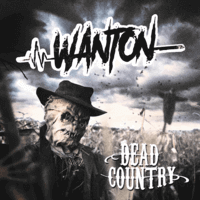

Wanton - Dead Country (Album, 2019)
01 - Bad News (2:59)
02 - Sorrow (3:09)
03 - Bone Orchard (3:36)
04 - Ghost Town Boy (4:23)
05 - The Good People (2:28)
06 - Dead Country (3:28)
07 - Tick-Tock Man (2:39)
08 - Chronophobia (2:45)
09 - I Drive The Hearse (4:04)
10 - Death Rattle Roll (2:49)
11 - Snake Pit (2:40)
12 - Where You At? (2:30)
13 - I Kill In My Songs (3:13)
14 - Roots (3:12)
© Crazy Love Records :: [CLLP64412]
Notes
Review
112/366 (Project 366)
Hard and Heavy psychobilly from Finland. Topnotch musicians, great drive, arrangements like a mighty storm. This musical gale can continue to be described and described. Each next track brings some novelty and surprise, although it leaves the most vivid and powerful sides of Wanton style. There is also a rather exceptional song (compared to the rest of the tracklist) - "Ghost Town Boy", a melodic Country Rockabilly track, but still with rather original lyrics and theme. However general sound is about really hard and heavy Rock'N'Roll. Perhaps with the influence of Metal music and Hard Rock, band gets a very decent, dynamic and diverse Modern Psychobilly look with the flavour of furious Streetpunk or, more likely, Hardcore.
Anyway there is a smashing psychobilly and maybe punchy punkabilly. Roar sound, stunning rockin' tunes, amazing skills of musicians, singalong, rampage. And everything is conceptually flavored. This is really what is usually "Highly Recommended" (if so tempestuous and 'psycho' sound is fine). And just the musicians showed pretty cool features.